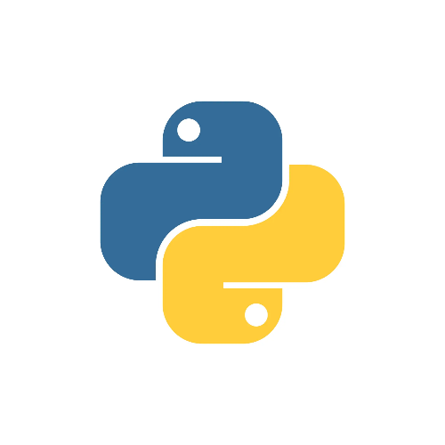
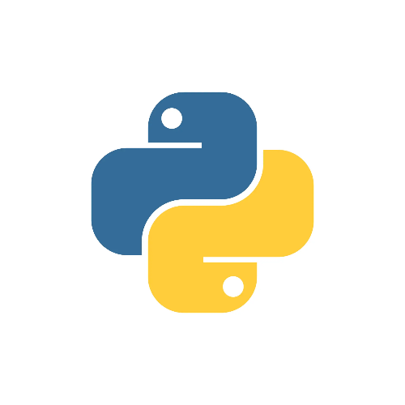

A propos de moi
Je m'appelle Pablo Huys, j'ai 20 ans, et je suis passionné par le développement depuis mes 17 ans.
Très jeune, j'ai découvert un vif intérêt pour la création de jeux vidéo, et j'ai rapidement su que c'était dans cet univers que je souhaitais évoluer.
Pour concrétiser cette ambition, j'ai orienté mes études vers l'informatique dès le lycée en suivant une formation SN, option RISC, qui m'a permis de développer des compétences solides en réseaux.
Aujourd'hui, je poursuis cette passion à l'école YNOV, où je suis inscrit en Bachelor Informatique, avec pour objectif de me spécialiser dans le développement web ou logiciel.
{kind=link}
Mon parcours professionnel
Voici une liste de mon parcours professionnel dans le domaine de l'informatique.
2024 | Stage au sein du groupe ADONIS
2022 | Participation à un projet YDAYS
2021 | Stage au sein de Spie Infoservice
2020 | Stage au sein d'Agoravita
Mes compétences techniques
Grâce à mes projets personnels ainsi qu'à ceux réalisés dans le cadre de mon école Ynov, j'ai eu l'opportunité d'apprendre plusieurs langages de programmation.
 



Mes réseaux